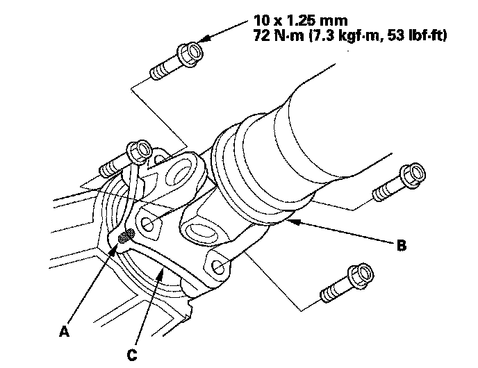
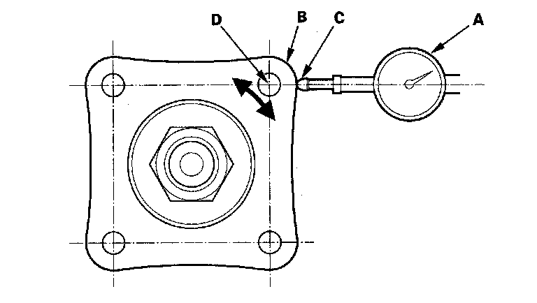

Transfer Case: Testing and Inspection
Transfer Assembly Inspection1. Raise the vehicle, and make sure it is supported securely.
2. Shift the transmission into the N position.
3. Make a reference mark (A) across the propeller shaft (B) and the transfer companion flange (C).

4. separate the propeller shaft from the transfer companion flange.
5. Set a dial indicator (A) on the transfer companion flange (B); position dial indicator tip (C) on the direct extension of the bolt hole center (D).

6. Measure the transfer gear backlash.
Standard: 0.06-0.16 mm (0.002-0.006 in.)
7. If the measurement is out of standard, remove the transfer assembly, and adjust the transfer gear backlash.
8. Check for fluid leaks between the mating faces of the transfer assembly and transmission.
9. If there is leak, remove the transfer assembly, remove the transfer cover, and replace the O-ring.
10. Check for fluid leaks between the transfer companion flange and transfer oil seal.
11. If there is leak, remove the transfer assembly from the transmission, and replace the transfer oil seal and O-ring on the transfer output shaft (hypoid gear). If oil seal and O-ring replacement is required, you will need to check and adjust the transfer gear tooth contact, transfer gear backlash, the tapered roller bearing starting torque, and the total starting torque. Do not replace the oil seal with the transfer assembly on the transmission.